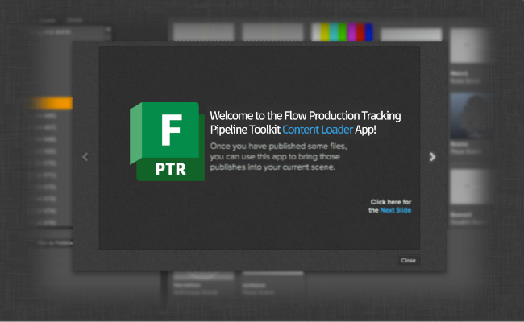

Help Screen Popup¶
Introduction¶
The help popup is a window which presents a series of help images to the user, typically displayed at startup, to help introduce new feature or a new application to a user. The information is presented as an interactive slide show where the user can easily navigate between sides.

You simply provide it with a list of transparent bitmaps sized 650x400 and it will create a slideshow with animated transitions and a link to the bundle’s associated documentation (retrieved from the manifest).
Sample Code¶
The help_screen module contains a single method that takes care of everything.
Simply create the number of 650x400 images that you want and export them as transparent
png files and ensure that the background is transparent (this is not a strict requirement,
but it will most likely look strange with a non-transparent background). Add the
images to the QT resource section of your app and then execute the following code
to launch the help screen:
# example of how the help screen can be used within your app code
# import the module - note that this is using the special
# import_framework code so it won't work outside an app
help_screen = sgtk.platform.import_framework("tk-framework-qtwidgets", "help_screen")
# generate pixmaps of the help screen resources we want to display
help_pix = [ QtGui.QPixmap(":/res/help_1.png"),
QtGui.QPixmap(":/res/help_2.png"),
QtGui.QPixmap(":/res/help_3.png"),
QtGui.QPixmap(":/res/help_4.png") ]
# get the current app object
app = sgtk.platform.current_bundle()
# get the current QT UI window
window = current_dialog_object.window()
# and present the help screen. This is a non-blocking call
# and the application flow will continue
help_screen.show_help_screen(self.window(), app, help_pix)
API Reference¶
-
help_screen.show_help_screen(parent, bundle, pixmaps)[source]¶ Show help screen window.
Parameters: - parent (
PySide.QtGui.QWidget) – Parent window. The help screen will be centered on top of this window. - bundle (
sgtk.platform.Application,sgtk.platform.Engineorsgtk.platform.Framework) – Bundle object to associate with - pixmaps (List of
PySide.QtGui.QPixmap) – List of images, all 650x400 px
- parent (